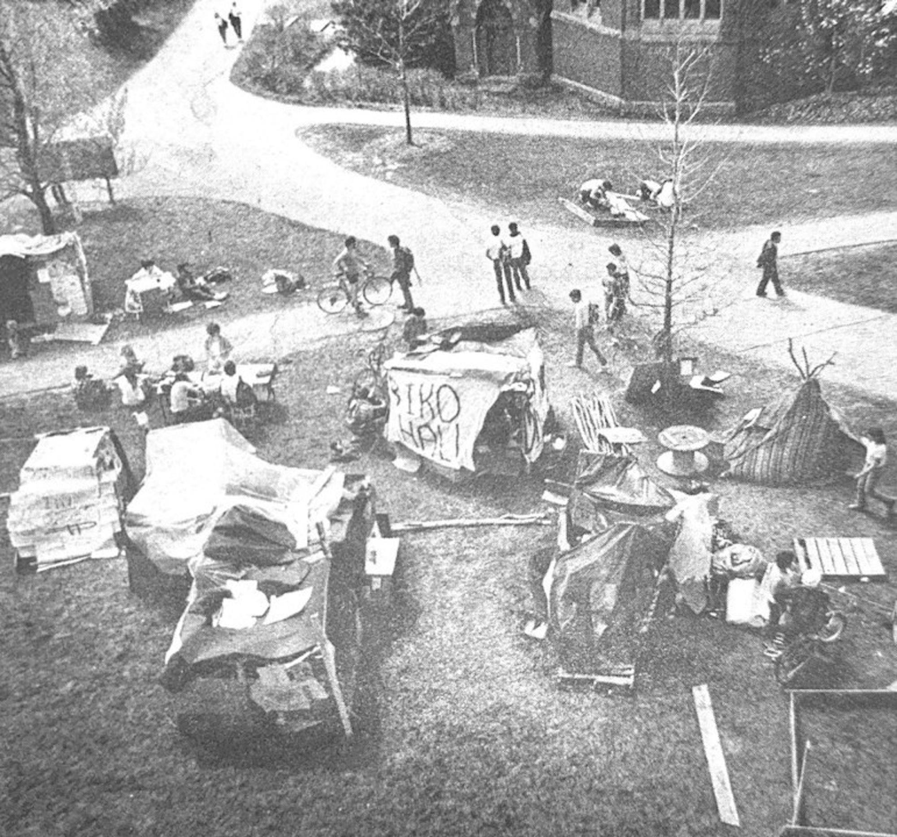
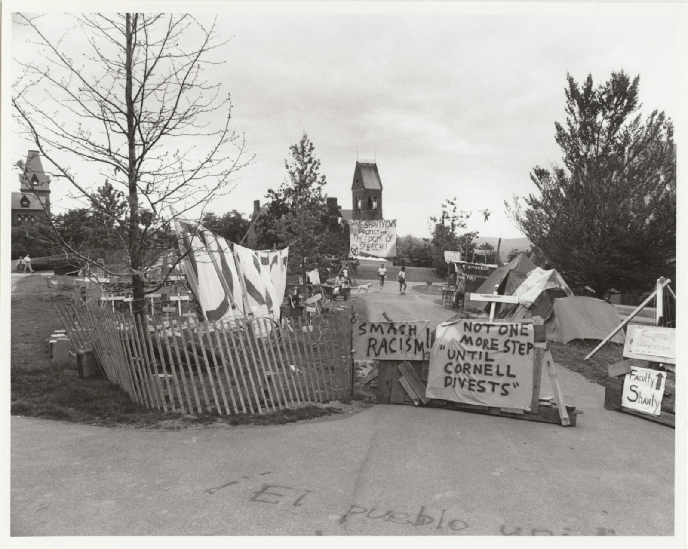

In the 1980s, Cornell became a major site of student anti-apartheid activism as students, faculty, and staff pressured the university to divest from companies tied to South Africa’s apartheid regime.
In the 1980s, Cornell University became a site of student activism within the global campaign against South Africa’s apartheid regime. The Cornell anti-apartheid movement targeted university endowments with investments in companies doing business with the South African government. Students pushed for divestment via sit-ins, encampments, and organized political pressure on the institution, arguing that university investments in the South African economy supported the furthering of racial segregation and political repression. Activists protested under the claim that the university’s financial investments created moral responsibility for political outcomes abroad. This movement in Cornell reflected broader activism nationwide and the rise of international condemnation towards the apartheid, and student activists claimed divestment could, as a result, weaken the apartheid regime.
By the the mid-1980s, students began to take direct action against university leadership, and demonstrations around Day Hall began. In 1985, students from the group South African Divestment Coalition (SADC) staged repeated sit-ins at administrative offices to demand that Cornell trustees adopt a divestment policy. After the first wave of arrests following a refusal to disperse, the Faculty and Staff Against Apartheid (FSAA) group joined student protestors. According to the Cornell Sun, “protesters orchestrated sit-ins in Day Hall, resulting in over 900 arrests by the time the spring semester ended.” These arrests reflected the tension between administrators and students over whether the campus occupations violated university policy.

Cornell anti-apartheid protest encampments and shantytown organizing.
After the sit-ins at Day Hall and their arrests, students and faculty constructed a “shantytown.” These shanties, made from cardboard, paper, thin wooden boards, and plastic, were constructed to serve as examples of the conditions that black South Africans under apartheid lived in as a way to evoke sympathy from onlookers. The physicality of the encampment became a visual symbol of both the protest, in and of itself, and the segregation imposed by the apartheid. Protesters maintained the shanties, with some even moving to living in them full time throughout the encampment. Despite the shanties being torn down more than once and police forces arresting protesters, the people continued to rebuild them and continue living in them over the course of several weeks during the spring semester. By the end of the school year, almost a thousand people were arrested for partaking in the shantytown.

Protesters repeatedly rebuilt the shantytown despite removals and arrests.
The central demand of the Cornell shantytown was full divestment from the corporations and companies operating in South Africa, but despite the efforts in 1985, the Cornell’s Board of Trustees did not concede to the community’s demands. The administration resisted full divestment. However, in 1986, they conceded to adopting a selective divestment policy instead. With this selective divestment policy, rather than fully withdrawing all investments connected to the apartheid, Cornell pledged to divest only from companies that “that do not work actively and publicly in support of the efforts to bring about the dismantling of the apartheid.” Despite claiming to only maintain investments in companies that held certain ethical standards, this was not the full divestment that the protestors demanded. This prompted further shantytowns in that year, which led to further arrests.
The protesters of Cornell, as stated before, understood that pushing for the divestment of the university was a part of a broader international movement to weaken the apartheid. At large, other U.S. university divestment movements targeted companies such as oil companies supplying energy to South Africa, mining corporations extracting goal and minerals by exploiting labor from black South Africans, banks financing the businesses in the apartheid, and manufacturers selling equipment to the military and police forces. For example, when Harvard University also adopted selective divestment in 1986, it sold its holdings in companies such as Mobil, Texaco, Chevron, Exxon, Ford, Schlumberger Co, and Phelps Dodge, all of which conducted business with military forces.